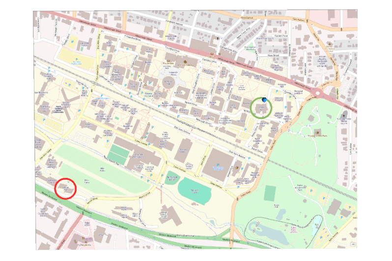

Jockey's Ridge digital terrain model time series: slope (left) and elevation (right). Created with the GRASS GIS Animation Tool.
Eye tracking data

Space-time cube visualization of eye tracking data collected from people trying to fing their way from one way to other on a campus map (OpenStreetMap.org).